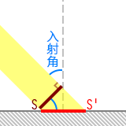
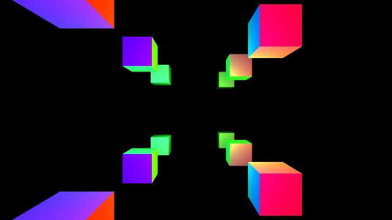

Ch8-3 延迟渲染
本节的main.cpp对应示例代码中的：Ch8-3.hpp
虽然延迟渲染属于图形编程常识性内容，这里还是简单介绍下概念。
正向渲染
在绘制场景中每个物件的时候完成其光照计算，这种传统的渲染方式即是正向渲染（forward rendering）。
延迟渲染
渲染过程中绘制的许多片段最终会因深度测试而被遮挡掉，那么显然，打从一开始就没必要对这些片段进行光照计算。
延迟渲染（deferred rendering）即是将本该在绘制每个物件时进行的光照计算延后，只对最终保留下来的片段进行光照计算，以此来大幅节省运算开销的渲染手段。
延迟渲染的具体做法分为两步：
1.绘制场景中的物件但不计算光照，而是将光照计算所需的信息写入图像附件，这些图像附件统称为几何缓冲（G-buffer）
2.对交换链图像中的每个像素，读取G-buffer中相应位置的数据，进行光照计算，这一步叫合成（composition）
如此一来，进行光照计算的片段着色器调用次数，便等于交换链图像的像素数，在确定的分辨率下是个恒定值，不会因场景中物件的增多而增长。
前向透明度
渲染半透明物体时，需要透出底下的颜色。
因为延迟渲染中的G-buffer只有深度测试后最终留下来的片段，从中无法获取所谓“底下”的信息，因此无法延迟渲染半透明物体。
前向透明度（forward transparency）指在延迟渲染结束时保留深度值，然后正向渲染半透明物体的做法。
本文以演示Vulkan API为主要目的，实现一套最简单的延迟渲染的流程，不考虑前向透明度。
冯氏光照
考虑到讲解BRDF光照模型估计得花上四节的篇幅，这一节就用较为老旧的冯氏光照（Phong lighting）模型吧。
冯氏光照模型中，光照被分为三个部分：环境光、漫反射、高光。
环境光是数值固定的底色，不做展开。漫反射和高光可由较为简单的材质参数——颜色和高光度——算得。
漫反射

如左图所示，一束定向光打向物体表面，S是垂直于光路的截面，光打在物体表面S'的部分上。
不考虑光在空气等介质中的损耗，因能量守恒，S和S'上光的辐射通量相等。
那么辐照度（单位面积上的辐射的能量）与上述两个面积的关系是：
S'上的辐照度 * S'的面积 = S上的辐照度 * S的面积 ，变形为S'上的辐照度 = S上的辐照度 * S的面积 / S'的面积，
由三角函数关系可得：
S'上的辐照度 = S上的辐照度 * cos(入射角)
朗伯余弦定律（英文维基：Lambert's cosine law）表明“从各个方向看到的漫反射表面皆是一样的亮度”。
-
如右图所示，而若一束漫反射光垂直打在观察面上，则观察面与物体表面的夹角等于出射角，出射光打在观察面上的面积为
S'的面积 * cos(出射角)。
对于特定方向的漫反射光，在与物体表面平行的平面上，其辐照度与出射角的余弦成正比，则S'上特定方向出射光的辐射通量为S'的面积 * S'上的辐照度 * cos(出射角)，与前面的式子约分后可知，观察面上的辐照度等于S'上的辐照度，即说明观察到的漫反射亮度与出射角无关。 -
如果漫反射光并非垂直打在观察面上该怎么办？
想想你的视觉，或许是大脑有校正，至少人并不会觉得用余光看一个物体比盯着该物体时看到的颜色更暗，所以在渲染中也不用管这种事了。
冯氏光照模型不考虑入射光与所有方向的出射光之间的能量守恒，因此关于辐照度的推理就到此为止了。
用物体的反照率（albedo，即一般认知中的“物体本身固有的颜色”）乘以光在物体表面的辐照度，求取漫反射的数值：
物体表面的漫反射 = 物体表面对RGB三色的反照率 * 光在物体表面的RGB三色的辐照度
高光

冯氏光照中，视线越接近镜面反射光线，高光越强烈。
也就是说，镜面反射光线与视线的夹角能反映高光的强度。
但相比计算镜面反射的方向，通常更倾向于考虑视线与入射光线夹角的平分线，显然这条线越靠近法线，视线就越接近镜面反射光线。
视线与入射光线夹角的平分线对应的向量叫半程向量，计算半程向量比计算镜面反射方向，运算量要少一些。
冯氏光照中，将半程向量与法向量点乘的结果（即两者夹角的余弦值）做乘方，再乘以物体的高光度（通常记作specular）和光在物体表面的辐照度以求取高光的数值：
物体表面的高光 = 物体表面的高光度 * 光在物体表面的RGB三色的辐照度 * (半程向量 · 法向量)^shininess
这里点乘的结果不超过1，因此shininess这个指数越大，光斑越小。你不必考虑shininess有什么物理意义，它没有。
这里考虑无色镜面反射，你也可以让高光度乘以反照率来获得RGB三色的高光度。
创建渲染通道和帧缓冲
对于通过延迟渲染实现冯氏光照，渲染通道的结构一般是这样的：
（下图中子通道#0的G-buffer例图为带有透明度的原图，子通道#1的例图将RGBA中A的数值以灰度图的形式可视化）
-
Vulkan标准规定实现必须支持VK_FORMAT_R16G16B16A16_SFLOAT格式的颜色附件，但是否支持VK_FORMAT_R16G16B16_SFLOAT格式的颜色附件则取决于硬件。因此虽然位置坐标和法向量都只有三个分量，出于省事和可移植性考虑，这里使用四分量的格式。
-
如果你觉得16位浮点数的精度不够，Vulkan标准也规定了实现必须支持VK_FORMAT_R32G32B32A32_SFLOAT格式的颜色附件（不保证能混色，不过G-buffer用不着混色）。但16位浮点附件和32位浮点附件最终算出的颜色只有约（8位色模式下）4个色阶的差异。
世界空间的位置坐标，可以通过深度附件中的深度值、片段的NDC坐标、投影矩阵、观察矩阵算得，因此上图中还可以减少一个图像附件以节省设备内存。
深度值是用来计算相机坐标系下的z坐标的，这一步可以被省掉：用来存法向量的图像附件只用了三个分量，可以将相机空间中的z坐标存入其第四个分量。
于是结构变成这样：
在EasyVulkan.hpp，easyVulkan命名空间中，定义相关的图像附件，及用来创建这些附件、渲染通道、帧缓冲的函数CreateRpwf_DeferredToScreen(...)。
为简化代码，这次就不为每张交换链图像分别创建一套对应的图像附件了：
colorAttachment ca_deferredToScreen_normalZ; //法线和相机坐标系下的z值 colorAttachment ca_deferredToScreen_albedoSpecular; //颜色和高光度 depthStencilAttachment dsa_deferredToScreen; //深度 const auto& CreateRpwf_DeferredToScreen(VkFormat depthStencilFormat = VK_FORMAT_D24_UNORM_S8_UINT) { static renderPassWithFramebuffers rpwf; static VkFormat _depthStencilFormat = depthStencilFormat; //因为一会儿需要用lambda定义重建交换链时的回调函数，把格式存到静态变量 /*待后续填充*/ return rpwf; }
四个图像附件的描述如下：
VkAttachmentDescription attachmentDescriptions[4] = { { //交换链图像 .format = graphicsBase::Base().SwapchainCreateInfo().imageFormat, .samples = VK_SAMPLE_COUNT_1_BIT, .loadOp = VK_ATTACHMENT_LOAD_OP_CLEAR, .storeOp = VK_ATTACHMENT_STORE_OP_STORE, .stencilLoadOp = VK_ATTACHMENT_LOAD_OP_DONT_CARE, .stencilStoreOp = VK_ATTACHMENT_STORE_OP_DONT_CARE, .finalLayout = VK_IMAGE_LAYOUT_PRESENT_SRC_KHR }, { //法线和相机坐标系下的z值 .format = VK_FORMAT_R16G16B16A16_SFLOAT, .samples = VK_SAMPLE_COUNT_1_BIT, .loadOp = VK_ATTACHMENT_LOAD_OP_CLEAR, .storeOp = VK_ATTACHMENT_STORE_OP_DONT_CARE, .stencilLoadOp = VK_ATTACHMENT_LOAD_OP_DONT_CARE, .stencilStoreOp = VK_ATTACHMENT_STORE_OP_DONT_CARE, .finalLayout = VK_IMAGE_LAYOUT_SHADER_READ_ONLY_OPTIMAL }, { //颜色和高光度 .format = VK_FORMAT_R8G8B8A8_UNORM, //与上一个只有格式不同 .samples = VK_SAMPLE_COUNT_1_BIT, .loadOp = VK_ATTACHMENT_LOAD_OP_CLEAR, .storeOp = VK_ATTACHMENT_STORE_OP_DONT_CARE, .stencilLoadOp = VK_ATTACHMENT_LOAD_OP_DONT_CARE, .stencilStoreOp = VK_ATTACHMENT_STORE_OP_DONT_CARE, .finalLayout = VK_IMAGE_LAYOUT_SHADER_READ_ONLY_OPTIMAL }, { //深度和模板 .format = _depthStencilFormat, .samples = VK_SAMPLE_COUNT_1_BIT, .loadOp = VK_ATTACHMENT_LOAD_OP_CLEAR, .storeOp = VK_ATTACHMENT_STORE_OP_DONT_CARE, .stencilLoadOp = _depthStencilFormat >= VK_FORMAT_S8_UINT ? VK_ATTACHMENT_LOAD_OP_CLEAR : VK_ATTACHMENT_LOAD_OP_DONT_CARE, .stencilStoreOp = VK_ATTACHMENT_STORE_OP_DONT_CARE, .finalLayout = VK_IMAGE_LAYOUT_DEPTH_STENCIL_ATTACHMENT_OPTIMAL } };
子通道的描述：
VkAttachmentReference attachmentReferences_subpass0[3] = { { 1, VK_IMAGE_LAYOUT_COLOR_ATTACHMENT_OPTIMAL }, //对应normalZ { 2, VK_IMAGE_LAYOUT_COLOR_ATTACHMENT_OPTIMAL }, //对应albedoSpecular { 3, VK_IMAGE_LAYOUT_DEPTH_STENCIL_ATTACHMENT_OPTIMAL } //对应深度和模板 }; VkAttachmentReference attachmentReferences_subpass1[3] = { { 1, VK_IMAGE_LAYOUT_SHADER_READ_ONLY_OPTIMAL }, //对应normalZ { 2, VK_IMAGE_LAYOUT_SHADER_READ_ONLY_OPTIMAL }, //对应albedoSpecular { 0, VK_IMAGE_LAYOUT_COLOR_ATTACHMENT_OPTIMAL } //对应交换链图像 }; VkSubpassDescription subpassDescriptions[2] = { { //第一个子通道，生成G-buffer .pipelineBindPoint = VK_PIPELINE_BIND_POINT_GRAPHICS, .colorAttachmentCount = 2, .pColorAttachments = attachmentReferences_subpass0, .pDepthStencilAttachment = attachmentReferences_subpass0 + 2 }, { //第二个子通道，进行composition .pipelineBindPoint = VK_PIPELINE_BIND_POINT_GRAPHICS, .inputAttachmentCount = 2, .pInputAttachments = attachmentReferences_subpass1, //将两张G-buffer用作输入附件 .colorAttachmentCount = 1, .pColorAttachments = attachmentReferences_subpass1 + 2 } };
渲染通道开始时的子通道依赖：
VkSubpassDependency subpassDependencies[2] = { { .srcSubpass = VK_SUBPASS_EXTERNAL, .dstSubpass = 0, .srcStageMask = VK_PIPELINE_STAGE_FRAGMENT_SHADER_BIT, .dstStageMask = VK_PIPELINE_STAGE_EARLY_FRAGMENT_TESTS_BIT, .srcAccessMask = 0, .dstAccessMask = VK_ACCESS_DEPTH_STENCIL_ATTACHMENT_WRITE_BIT, .dependencyFlags = VK_DEPENDENCY_BY_REGION_BIT }, { /*渲染通道结束时的依赖，待填充*/ } };
-
srcStageMask是VK_PIPELINE_STAGE_FRAGMENT_SHADER_BIT（惯例说明：因有栅栏同步，填0也无妨），指代前一帧中在片段着色器中读写G-buffer，除此之外与先前Ch8-2 深度测试和深度可视化中渲染通道开始时的依赖相同。
填写子通道#0和子通道#1之间的依赖，创建渲染通道：
VkSubpassDependency subpassDependencies[2] = { { .srcSubpass = VK_SUBPASS_EXTERNAL, .dstSubpass = 0, .srcStageMask = VK_PIPELINE_STAGE_FRAGMENT_SHADER_BIT, .dstStageMask = VK_PIPELINE_STAGE_EARLY_FRAGMENT_TESTS_BIT, .srcAccessMask = 0, .dstAccessMask = VK_ACCESS_DEPTH_STENCIL_ATTACHMENT_WRITE_BIT, .dependencyFlags = VK_DEPENDENCY_BY_REGION_BIT }, { .srcSubpass = 0, .dstSubpass = 1, .srcStageMask = VK_PIPELINE_STAGE_COLOR_ATTACHMENT_OUTPUT_BIT, .dstStageMask = VK_PIPELINE_STAGE_FRAGMENT_SHADER_BIT, .srcAccessMask = VK_ACCESS_COLOR_ATTACHMENT_WRITE_BIT, .dstAccessMask = VK_ACCESS_INPUT_ATTACHMENT_READ_BIT, .dependencyFlags = VK_DEPENDENCY_BY_REGION_BIT } }; VkRenderPassCreateInfo renderPassCreateInfo = { .attachmentCount = 4, .pAttachments = attachmentDescriptions, .subpassCount = 2, .pSubpasses = subpassDescriptions, .dependencyCount = 2, .pDependencies = subpassDependencies }; rpwf.renderPass.Create(renderPassCreateInfo);
-
这里即是要求子通道#0中将颜色输出到G-buffer后，在子通道#1中片段着色器读取这些输入附件（VK_ACCESS_INPUT_ATTACHMENT_READ_BIT）前完成包括交换链图像在内的内存布局转换。
创建相应的图像附件和帧缓冲。
因为用作输入附件的G-buffer在渲染通道结束后就用不着了，图像用途中指定VK_IMAGE_USAGE_TRANSIENT_ATTACHMENT_BIT：
colorAttachment ca_deferredToScreen_normalZ; //法线和相机坐标系下的z值 colorAttachment ca_deferredToScreen_albedoSpecular; //颜色和高光度 depthStencilAttachment dsa_deferredToScreen; //深度 const auto& CreateRpwf_DeferredToScreen(VkFormat depthStencilFormat = VK_FORMAT_D24_UNORM_S8_UINT) { /*...前面略*/ auto CreateFramebuffers = [] { rpwf.framebuffers.resize(graphicsBase::Base().SwapchainImageCount()); ca_deferredToScreen_normalZ.Create(VK_FORMAT_R16G16B16A16_SFLOAT, windowSize, 1, VK_SAMPLE_COUNT_1_BIT, VK_IMAGE_USAGE_INPUT_ATTACHMENT_BIT | VK_IMAGE_USAGE_TRANSIENT_ATTACHMENT_BIT); ca_deferredToScreen_albedoSpecular.Create(VK_FORMAT_R8G8B8A8_UNORM, windowSize, 1, VK_SAMPLE_COUNT_1_BIT, VK_IMAGE_USAGE_INPUT_ATTACHMENT_BIT | VK_IMAGE_USAGE_TRANSIENT_ATTACHMENT_BIT); dsa_deferredToScreen.Create(_depthStencilFormat, windowSize, 1, VK_SAMPLE_COUNT_1_BIT, VK_IMAGE_USAGE_TRANSIENT_ATTACHMENT_BIT); VkImageView attachments[4] = { VK_NULL_HANDLE, ca_deferredToScreen_normalZ.ImageView(), ca_deferredToScreen_albedoSpecular.ImageView(), dsa_deferredToScreen.ImageView() }; VkFramebufferCreateInfo framebufferCreateInfo = { .renderPass = rpwf.renderPass, .attachmentCount = 4, .pAttachments = attachments, .width = windowSize.width, .height = windowSize.height, .layers = 1 }; for (size_t i = 0; i < graphicsBase::Base().SwapchainImageCount(); i++) attachments[0] = graphicsBase::Base().SwapchainImageView(i), rpwf.framebuffers[i].Create(framebufferCreateInfo); }; auto DestroyFramebuffers = [] { ca_deferredToScreen_normalZ.~colorAttachment(); ca_deferredToScreen_albedoSpecular.~colorAttachment(); dsa_deferredToScreen.~depthStencilAttachment(); rpwf.framebuffers.clear(); }; CreateFramebuffers(); ExecuteOnce(rpwf); //防止需重建逻辑设备时，重复添加回调函数 graphicsBase::Base().AddCallback_CreateSwapchain(CreateFramebuffers); graphicsBase::Base().AddCallback_DestroySwapchain(DestroyFramebuffers); return rpwf; }
顶点和索引数据
在main.cpp中定义顶点数据的结构体：
struct vertex { glm::vec3 position; glm::vec3 normal; glm::vec4 albedoSpecular; };
基于前一节的顶点数据做修改。
因为是立方体，很容易就能写出法线。颜色和高光度随意，我这里用白色以反射任何颜色的光，高光度用了1，你可以指定超过1：
vertex vertices[] = { //x+ { { 1, 1, -1 }, { 1, 0, 0 }, { 1, 1, 1, 1 } }, { { 1, -1, -1 }, { 1, 0, 0 }, { 1, 1, 1, 1 } }, { { 1, 1, 1 }, { 1, 0, 0 }, { 1, 1, 1, 1 } }, { { 1, -1, 1 }, { 1, 0, 0 }, { 1, 1, 1, 1 } }, //x- { { -1, 1, 1 }, { -1, 0, 0 }, { 1, 1, 1, 1 } }, { { -1, -1, 1 }, { -1, 0, 0 }, { 1, 1, 1, 1 } }, { { -1, 1, -1 }, { -1, 0, 0 }, { 1, 1, 1, 1 } }, { { -1, -1, -1 }, { -1, 0, 0 }, { 1, 1, 1, 1 } }, //y+ { { 1, 1, -1 }, { 0, 1, 0 }, { 1, 1, 1, 1 } }, { { 1, 1, 1 }, { 0, 1, 0 }, { 1, 1, 1, 1 } }, { { -1, 1, -1 }, { 0, 1, 0 }, { 1, 1, 1, 1 } }, { { -1, 1, 1 }, { 0, 1, 0 }, { 1, 1, 1, 1 } }, //y- { { 1, -1, -1 }, { 0, -1, 0 }, { 1, 1, 1, 1 } }, { { -1, -1, -1 }, { 0, -1, 0 }, { 1, 1, 1, 1 } }, { { 1, -1, 1 }, { 0, -1, 0 }, { 1, 1, 1, 1 } }, { { -1, -1, 1 }, { 0, -1, 0 }, { 1, 1, 1, 1 } }, //z+ { { 1, 1, 1 }, { 0, 0, 1 }, { 1, 1, 1, 1 } }, { { 1, -1, 1 }, { 0, 0, 1 }, { 1, 1, 1, 1 } }, { { -1, 1, 1 }, { 0, 0, 1 }, { 1, 1, 1, 1 } }, { { -1, -1, 1 }, { 0, 0, 1 }, { 1, 1, 1, 1 } }, //z- { { -1, 1, -1 }, { 0, 0, -1 }, { 1, 1, 1, 1 } }, { { -1, -1, -1 }, { 0, 0, -1 }, { 1, 1, 1, 1 } }, { { 1, 1, -1 }, { 0, 0, -1 }, { 1, 1, 1, 1 } }, { { 1, -1, -1 }, { 0, 0, -1 }, { 1, 1, 1, 1 } } }; vertexBuffer vertexBuffer_perVertex(sizeof vertices); vertexBuffer_perVertex.TransferData(vertices);
逐实例输入的位移、索引数据就跟Ch8-2中一样吧：
glm::vec3 offsets[] = { { -4, -4, 6 }, { 4, -4, 6 }, { -4, 4, 10 }, { 4, 4, 10 }, { -4, -4, 14 }, { 4, -4, 14 }, { -4, 4, 18 }, { 4, 4, 18 }, { -4, -4, 22 }, { 4, -4, 22 }, { -4, 4, 26 }, { 4, 4, 26 } }; vertexBuffer vertexBuffer_perInstance(sizeof offsets); vertexBuffer_perInstance.TransferData(offsets); uint16_t indices[36] = { 0, 1, 2, 2, 1, 3 }; for (size_t i = 1; i < 6; i++) for (size_t j = 0; j < 6; j++) indices[i * 6 + j] = indices[j] + i * 4; indexBuffer indexBuffer(sizeof indices); indexBuffer.TransferData(indices);
Uniform数据
这次来尝试使用观察矩阵。
因为push constant的128字节不够，我打算把投影矩阵、观察矩阵、点光源信息都放进单个uniform缓冲区：
struct { glm::mat4 proj = FlipVertical(glm::infinitePerspectiveLH_ZO(glm::radians(60.f), float(windowSize.width) / windowSize.height, 0.1f)); glm::mat4 view = /*待填充*/; int32_t lightCount; struct { alignas(16) glm::vec3 position; //光源位置 alignas(16) glm::vec3 color; //光的颜色 float strength; //光的强度 } lights[8]; } descriptorConstants;
GLM中提供了用于生成观察矩阵的函数glm::lookAt(...)：
mat4 lookAt( vec3 eye, //观察者所在位置 vec3 center, //观察者所视方向上的点 vec3 up //头顶的方向（请不要纠结观察者是不是人有没有头之类的问题） );
-
up不必与观察者所视方向垂直，但不得与观察者所视方向完全同向/反向。
center - eye即是观察者所视方向，称为前向量。
up与前向量叉乘可得到指向观察者右方的向量，称为右向量。
前向量与右向量叉乘得到的结果叫上向量。
右向量、上向量、前向量，世界坐标系中的这三个向量与相机空间中三条坐标轴的正方向一一对应。
下面代码中，我显式地调用了glm::lookAt(...)的左手系版本glm::lookAtLH(...)。
生成的观察矩阵从世界坐标原点看向+z方向，前向量为{ 0, 0, 1 }，那么up为{ -1, 0, 0 }的效果相当于将头逆时针倾斜90°：
glm::mat4 view = glm::lookAtLH(glm::vec3(0, 0, 0), glm::vec3(0, 0, 1), glm::vec3(-1, 0, 0));
来指定点光源，虽然我前面让lights有8个元素，这里就省事点只用分别为红绿蓝的三个光源，届时哪个光打在哪儿也能分得很清楚。
最后把数据扔进uniform缓冲区：
descriptorConstants.lightCount = 3;
descriptorConstants.lights[0] = { { 0.f, 4.f, 6.f }, { 1.f, 0.f, 0.f }, 100.f }; //红光，光源在离观察者最近的两个立方体的正上方
descriptorConstants.lights[1] = { { 0.f, 0.f, 16.f }, { 0.f, 1.f, 0.f }, 100.f }; //绿光，光源在z轴上这堆立方体的中央位置
descriptorConstants.lights[2] = { { 0.f, -4.f, 6.f }, { 0.f, 0.f, 1.f }, 100.f }; //蓝光，光源在离观察者最近的两个立方体的中间
uniformBuffer uniformBuffer(sizeof descriptorConstants);
uniformBuffer.TransferData(descriptorConstants);
在这里预先展示下届时的效果：
-
因“将头逆时针倾斜90°”，与前一节中的图像相比，视野中的物体顺时针转了90°。
书写着色器并创建管线
GBuffer.vert.shader
#version 460 #pragma shader_stage(vertex) layout(location = 0) in vec3 i_Position; //逐顶点 layout(location = 1) in vec3 i_Normal; //逐顶点 layout(location = 2) in vec4 i_AlbedoSpecular; //逐顶点 layout(location = 3) in vec3 i_InstancePosition; //逐实例 layout(location = 0) out vec4 o_NormalZ; layout(location = 1) out vec4 o_AlbedoSpecular; layout(binding = 0) uniform descriptorConstants_pv { mat4 proj; mat4 view; //观察矩阵 }; void main() { vec3 position = i_Position + i_InstancePosition; gl_Position = proj * view * vec4(position, 1); o_NormalZ = vec4(i_Normal, gl_Position.w); //此处gl_Position.w等于相机空间中的z坐标 o_AlbedoSpecular = i_AlbedoSpecular; }
-
没必要为了获得相机空间中的z坐标而把
view * vec4(position, 1)的结果保存到变量，透视投影矩阵与相机空间坐标相乘后得到的gl_Position.w等于相机空间中的z坐标，解释在前一节。
GBuffer.frag.shader
#version 460 #pragma shader_stage(fragment) layout(location = 0) in vec4 i_NormalZ; layout(location = 1) in vec4 i_AlbedoSpecular; layout(location = 0) out vec4 o_NormalZ; layout(location = 1) out vec4 o_AlbedoSpecular; void main() { o_NormalZ = i_NormalZ; o_AlbedoSpecular = i_AlbedoSpecular; }
Composition.vert.shader
绘制整个屏幕的范围。
输出NDC坐标的x和y到o_Position，用于在片段着色器中求取世界空间中的位置坐标：
#version 460 #pragma shader_stage(vertex) vec2 positions[4] = { { 0, 0 }, { 0, 1 }, { 1, 0 }, { 1, 1 } }; layout(location = 0) out vec2 o_Position; void main() { o_Position = positions[gl_VertexIndex]; gl_Position = vec4(o_Position, 0, 1); }
Composition.frag.shader
定义所有输入输出和可特化常量：
#version 460 #pragma shader_stage(fragment) struct light { vec3 position; vec3 color; float strength; }; layout(constant_id = 0) const uint maxLightCount = 32; layout(constant_id = 1) const uint shininess = 32; layout(location = 0) in vec2 i_Position; layout(location = 0) out vec4 o_Color; layout(binding = 0) uniform descriptorConstants { mat4 proj; mat4 view; int lightCount; light lights[maxLightCount]; }; layout(binding = 1, input_attachment_index = 0) uniform subpassInput u_GBuffers[2]; void main() { /*待填充*/ }
-
涉及到的语法：输入附件的声明方式、可特化常量的声明方式。
如前文所言，我们需要使用相机空间下的z值、NDC坐标的x和y、投影矩阵、观察矩阵，来算出每个片段对应的世界坐标系中的位置。
首先用GLSL的内置函数subpassLoad(...)读取相应片段位置上G-buffer的数据，参数不言自明：
void main() { vec3 position; position.z = subpassLoad(u_GBuffers[0]).w; vec3 normal = normalize(subpassLoad(u_GBuffers[0]).xyz); vec3 albedo = subpassLoad(u_GBuffers[1]).xyz; float specular = subpassLoad(u_GBuffers[1]).w; }
-
用GLSL的内置函数normalize(...)将法向量标准化（即归一化，使矢量模长为1），以使之后的点乘能正确反映法向量与其他向量的夹角。
求取世界空间坐标
来求取片段对应的世界空间坐标，首先得求取投影变换前的相机空间坐标。
下文给出计算方法，你也可以阅读有关投影变换的数学后自行推导。
现已经将相机坐标系下的z坐标存到了position.z。
i_Position中是NDC的x和y，它们乘以position.z即为齐次剪裁空间坐标：
//伪代码
齐次剪裁空间坐标.x == i_Position.x * position.z;
齐次剪裁空间坐标.y == i_Position.y * position.z;
从齐次剪裁空间坐标变到相机空间，即进行投影变换的逆变换。
对于glm::perspective(...)这种将相机坐标系的原点映射到视口中心的投影矩阵，对x和y的投影变换只不过是乘以一个系数：
齐次剪裁空间坐标.x = 相机空间.x * 系数
对于glm::frustum(...)这种可能将相机坐标系的原点映射到视口中心之外的投影矩阵，需要考虑偏移：
齐次剪裁空间坐标.x = 相机空间.x * 系数 + 相机空间.z * 另一系数（这里“另一系数”会乘以“相机空间.z”是因为偏移也得符合近大远小）
根据矩阵乘矢量的展开式可知，对于x坐标，这里的两个系数分别为proj[0][0]和proj[2][0]（注意GLM默认使用列主矩阵），将先前的伪代码等式代入上式，得到如下数学关系：
//伪代码 i_Position.x * position.z == 相机空间.x * proj[0][0] + position.z * proj[2][0]; //则： 相机空间.x == (i_Position.x - * proj[2][0]) * position.z / proj[0][0];
对于y坐标以此类推。
相机空间的x和y坐标存到position.xy，于是：
position.x = (i_Position.x - proj[2][0]) * position.z / proj[0][0]; position.y = (i_Position.y - proj[2][1]) * position.z / proj[1][1];
接着进行“将世界坐标变到相机空间坐标”的逆变换，用观察矩阵的逆矩阵乘以相机空间坐标即可。
逆矩阵可由GLSL的内置函数inverse(...)求取：
mat4 inverseView = inverse(view); position = (inverseView * vec4(position, 1)).xyz;
Note
虽然这套教程有要求读者自备高中程度的数学知识，还是对数学原理略作解释吧。
逆矩阵与原矩阵相乘为单位矩阵：
单位矩阵 == 逆观察矩阵 * 观察矩阵
上式等号两侧都后乘世界空间坐标：
单位矩阵 * 世界空间坐标 == 逆观察矩阵 * 观察矩阵 * 世界空间坐标
矩阵乘法具有结合性（本质上是因为映射有结合性），进而：
世界空间坐标 == 逆观察矩阵 * (观察矩阵 * 世界空间坐标)即：世界空间坐标 == 逆观察矩阵 * 相机空间坐标
从观察矩阵的逆矩阵还可以取得相机/观察者在世界空间中的位置，用逆观察矩阵乘以相机空间的原点即可：
//vec3 cameraPosition = (inverseView * vec4(0, 0, 0, 1)).xyz; //上式等价于下式 vec3 cameraPosition = { inverseView[3][0], inverseView[3][1], inverseView[3][2] };
光照计算
进行光照计算，设定o_Color初始值为全黑，然后遍历光源：
o_Color = vec4(0, 0, 0, 1); for (uint i = 0; i < lightCount; i++) { /*待填充*/ }
计算辐照度：
点光源向四周发光，真空中不考虑光能被介质吸收，那么在每个距离光源一定半径的球面上的光能相等：
距离光源为r的球面的面积 * 距离光源为r的球面上的辐照度 = 点光源的辐射通量
球面面积公式是关于r的二次式，因此：对于点光源发射的光，照到真空中某点的辐照度，与该点到光源的距离成二次反比。
（虽然这应该是连初中生都能推理出来的常识，但直接上代码又会显得很突兀）
vec3 toLight = lights[i].position - position; vec3 lightIntensity = lights[i].color * lights[i].strength / pow(length(toLight), 2); //↑我知道辐照度的英文不是intensity，不过这归根结底只是个用来计算的数值，不是严格对应物理量
-
pow(...)是乘方。用length(...)求矢量模长。
环境光就忽略了，计算漫反射，用dot(...)点乘求得入射角的余弦后钳制到不小于0：
toLight = normalize(toLigt); o_Color.rgb += albedo * lightIntensity * max(dot(normal, toLight), 0);
然后计算高光：
vec3 toCamera = normalize(cameraPosition - position); //视线方向 vec3 halfway = normalize(toCamera + toLight); //半程向量 o_Color.rgb += specular * lightIntensity * pow(max(dot(normal, halfway), 0), shininess);
对代码进行整理，汇总如下：
#version 460 #pragma shader_stage(fragment) struct light { vec3 position; vec3 color; float strength; }; layout(constant_id = 0) const uint maxLightCount = 32; layout(constant_id = 1) const uint shininess = 32; layout(location = 0) in vec2 i_Position; layout(location = 0) out vec4 o_Color; layout(binding = 0) uniform descriptorConstants { mat4 proj; mat4 view; int lightCount; light lights[maxLightCount]; }; layout(binding = 1, input_attachment_index = 0) uniform subpassInput u_GBuffers[2]; void main() { mat4 inverseView = inverse(view); vec3 cameraPosition = { inverseView[3][0], inverseView[3][1], inverseView[3][2] }; vec3 position; position.z = subpassLoad(u_GBuffers[0]).w; position.x = (i_Position.x - proj[2][0]) * position.z / proj[0][0]; position.y = (i_Position.y - proj[2][1]) * position.z / proj[1][1]; position = (inverseView * vec4(position, 1)).xyz; vec3 normal = normalize(subpassLoad(u_GBuffers[0]).xyz); vec3 albedo = subpassLoad(u_GBuffers[1]).xyz; float specular = subpassLoad(u_GBuffers[1]).w; o_Color = vec4(0, 0, 0, 1); for (uint i = 0; i < lightCount; i++) { vec3 toLight = lights[i].position - position; vec3 lightIntensity = lights[i].color * lights[i].strength / pow(length(toLight), 2); toLight = normalize(toLigt); vec3 halfway = normalize(/*toCamera*/normalize(cameraPosition - position) + toLight); o_Color.rgb += lightIntensity * ( albedo * max(dot(normal, toLight), 0) + specular * pow(max(dot(normal, halfway), 0), shininess)); } }
创建管线
惯例：
descriptorSetLayout descriptorSetLayout_gBuffer; pipelineLayout pipelineLayout_gBuffer; pipeline pipeline_gBuffer; descriptorSetLayout descriptorSetLayout_composition; pipelineLayout pipelineLayout_composition; pipeline pipeline_composition; const auto& RenderPassAndFramebuffers_Screen() { static const auto& rpwf = easyVulkan::CreateRpwf_DeferredToScreen(); return rpwf; } void CreateLayout() { /*待填充*/ } void CreatePipeline() { /*待填充*/ }
创建管线布局：
void CreateLayout() { //G-buffer VkDescriptorSetLayoutBinding descriptorSetLayoutBinding_gBuffer = { 0, VK_DESCRIPTOR_TYPE_UNIFORM_BUFFER, 1, VK_SHADER_STAGE_VERTEX_BIT }; VkDescriptorSetLayoutCreateInfo descriptorSetLayoutCreateInfo = { .bindingCount = 1, .pBindings = &descriptorSetLayoutBinding_gBuffer }; descriptorSetLayout_gBuffer.Create(descriptorSetLayoutCreateInfo); VkPipelineLayoutCreateInfo pipelineLayoutCreateInfo = { .setLayoutCount = 1, .pSetLayouts = descriptorSetLayout_gBuffer.Address() }; pipelineLayout_gBuffer.Create(pipelineLayoutCreateInfo); //Composition VkDescriptorSetLayoutBinding descriptorSetLayoutBindings_composition[2] = { { 0, VK_DESCRIPTOR_TYPE_UNIFORM_BUFFER, 1, VK_SHADER_STAGE_FRAGMENT_BIT }, { 1, VK_DESCRIPTOR_TYPE_INPUT_ATTACHMENT, 2, VK_SHADER_STAGE_FRAGMENT_BIT } }; descriptorSetLayoutCreateInfo.bindingCount = 2; descriptorSetLayoutCreateInfo.pBindings = descriptorSetLayoutBindings_composition; descriptorSetLayout_composition.Create(descriptorSetLayoutCreateInfo); pipelineLayoutCreateInfo.pSetLayouts = descriptorSetLayout_composition.Address(); pipelineLayout_composition.Create(pipelineLayoutCreateInfo); }
创建各个着色器模组：
void CreatePipeline() { static shaderModule vert_gBuffer("shader/GBuffer.vert.spv"); static shaderModule frag_gBuffer("shader/GBuffer.frag.spv"); VkPipelineShaderStageCreateInfo shaderStageCreateInfos_gBuffer[2] = { vert_gBuffer.StageCreateInfo(VK_SHADER_STAGE_VERTEX_BIT), frag_gBuffer.StageCreateInfo(VK_SHADER_STAGE_FRAGMENT_BIT) }; static shaderModule vert_composition("shader/Composition.vert.spv"); static shaderModule frag_composition("shader/Composition.frag.spv"); VkPipelineShaderStageCreateInfo shaderStageCreateInfos_composition[2] = { vert_composition.StageCreateInfo(VK_SHADER_STAGE_VERTEX_BIT), frag_composition.StageCreateInfo(VK_SHADER_STAGE_FRAGMENT_BIT) }; /*待填充*/ }
趁此机会尝试特化着色器中的常量。
先前在Composition.frag.shader中，常量shininess的数值是32，现将其特化为64，特化信息如下：
static constexpr int32_t shininess = 64; static VkSpecializationMapEntry mapEntry = { 1, //constantID，被特化常量在着色器中的的ID 0, //offset，特化数据在VkSpecializationInfo::pData中的起始位置 sizeof shininess //size，特化数据的大小，单位为字节 }; static VkSpecializationInfo specializationInfo = { 1, //mapEntryCount &mapEntry, //pMapEntries sizeof shininess, //dataSize &shininess //pData };
创建管线：
auto Create = [] { //G-buffer graphicsPipelineCreateInfoPack pipelineCiPack; pipelineCiPack.createInfo.layout = pipelineLayout_gBuffer; pipelineCiPack.createInfo.renderPass = RenderPassAndFramebuffers().renderPass; pipelineCiPack.createInfo.subpass = 0; pipelineCiPack.vertexInputBindings.emplace_back(0, sizeof(vertex), VK_VERTEX_INPUT_RATE_VERTEX); pipelineCiPack.vertexInputBindings.emplace_back(1, sizeof(glm::vec3), VK_VERTEX_INPUT_RATE_INSTANCE); pipelineCiPack.vertexInputAttributes.emplace_back(0, 0, VK_FORMAT_R32G32B32_SFLOAT, offsetof(vertex, position)); pipelineCiPack.vertexInputAttributes.emplace_back(1, 0, VK_FORMAT_R32G32B32_SFLOAT, offsetof(vertex, normal)); pipelineCiPack.vertexInputAttributes.emplace_back(2, 0, VK_FORMAT_R32G32B32A32_SFLOAT, offsetof(vertex, albedoSpecular)); pipelineCiPack.vertexInputAttributes.emplace_back(3, 1, VK_FORMAT_R32G32B32_SFLOAT, 0); pipelineCiPack.inputAssemblyStateCi.topology = VK_PRIMITIVE_TOPOLOGY_TRIANGLE_LIST; pipelineCiPack.viewports.emplace_back(0.f, 0.f, float(windowSize.width), float(windowSize.height), 0.f, 1.f); pipelineCiPack.scissors.emplace_back(VkOffset2D{}, windowSize); pipelineCiPack.rasterizationStateCi.cullMode = VK_CULL_MODE_BACK_BIT; pipelineCiPack.rasterizationStateCi.frontFace = VK_FRONT_FACE_COUNTER_CLOCKWISE; pipelineCiPack.multisampleStateCi.rasterizationSamples = VK_SAMPLE_COUNT_1_BIT; pipelineCiPack.depthStencilStateCi.depthTestEnable = VK_TRUE; pipelineCiPack.depthStencilStateCi.depthWriteEnable = VK_TRUE; pipelineCiPack.depthStencilStateCi.depthCompareOp = VK_COMPARE_OP_LESS; pipelineCiPack.colorBlendAttachmentStates.resize(2); //生成G-buffer的管线输出到两个图像附件，两个都要指定混色方式 pipelineCiPack.colorBlendAttachmentStates[0].colorWriteMask = 0b1111; pipelineCiPack.colorBlendAttachmentStates[1].colorWriteMask = 0b1111; pipelineCiPack.UpdateAllArrays(); pipelineCiPack.createInfo.stageCount = 2; pipelineCiPack.createInfo.pStages = shaderStageCreateInfos_gBuffer; pipeline_gBuffer.Create(pipelineCiPack); //Composition pipelineCiPack.createInfo.layout = pipelineLayout_composition; pipelineCiPack.createInfo.subpass = 1; pipelineCiPack.createInfo.pStages = shaderStageCreateInfos_composition; pipelineCiPack.vertexInputStateCi.vertexBindingDescriptionCount = 0; //Composition.vert.shader不需要输入顶点数据 pipelineCiPack.vertexInputStateCi.vertexAttributeDescriptionCount = 0; pipelineCiPack.inputAssemblyStateCi.topology = VK_PRIMITIVE_TOPOLOGY_TRIANGLE_STRIP; pipelineCiPack.colorBlendStateCi.attachmentCount = 1; pipeline_composition.Create(pipelineCiPack); }; auto Destroy = [] { pipeline_gBuffer.~pipeline(); pipeline_composition.~pipeline(); }; graphicsBase::Base().AddCallback_CreateSwapchain(Create); graphicsBase::Base().AddCallback_DestroySwapchain(Destroy); Create();
写入描述符
使用输入附件同使用贴图一样，需要为其创建描述符。
首先分配描述符，生成G-buffer的子通道需要一个uniform缓冲区的描述符，composition的子通道需要一个uniform缓冲区的描述符和两个输入附件的描述符：
VkDescriptorPoolSize descriptorPoolSizes[] = { { VK_DESCRIPTOR_TYPE_UNIFORM_BUFFER, 2 }, { VK_DESCRIPTOR_TYPE_INPUT_ATTACHMENT, 2 } }; descriptorPool descriptorPool(2, descriptorPoolSizes); descriptorSet descriptorSet_gBuffer; static descriptorSet descriptorSet_composition; //static修饰的原因见后文的lambda descriptorPool.AllocateSets(descriptorSet_gBuffer, descriptorSetLayout_gBuffer); descriptorPool.AllocateSets(descriptorSet_composition, descriptorSetLayout_composition);
首先写入uniform缓冲区的信息：
VkDescriptorBufferInfo bufferInfos[] = { { uniformBuffer, 0, sizeof(glm::mat4) * 2 }, //G-buffer的子通道中只要proj和view { uniformBuffer, 0, VK_WHOLE_SIZE } }; descriptorSet_gBuffer.Write(bufferInfos[0], VK_DESCRIPTOR_TYPE_UNIFORM_BUFFER, 0, 0); descriptorSet_composition.Write(bufferInfos[1], VK_DESCRIPTOR_TYPE_UNIFORM_BUFFER, 0, 0);
被用作输入附件的图像会在重建交换链时被一并重新创建，因此定义回调函数来写入输入附件对应的描述符。
除了不需要采样器，及描述符类型不同以外，提供给描述符的输入附件信息跟一般的贴图信息类似：
auto UpdateDescriptorSet_InputAttachments = [] { VkDescriptorImageInfo imageInfos[2] = { { VK_NULL_HANDLE, easyVulkan::ca_deferredToScreen_normalZ.ImageView(), VK_IMAGE_LAYOUT_SHADER_READ_ONLY_OPTIMAL }, { VK_NULL_HANDLE, easyVulkan::ca_deferredToScreen_albedoSpecular.ImageView(), VK_IMAGE_LAYOUT_SHADER_READ_ONLY_OPTIMAL }, }; descriptorSet_composition.Write( imageInfos, VK_DESCRIPTOR_TYPE_INPUT_ATTACHMENT, 1, //dstBinding 0 //dstArrayElement ); }; graphicsBase::Base().AddCallback_CreateSwapchain(UpdateDescriptorSet_InputAttachments); UpdateDescriptorSet_InputAttachments();
绘制
int main() { /*...前面略*/ VkClearValue clearValues[4] = { { .color = {} }, { .color = {} }, { .color = {} }, { .depthStencil = { 1.f, 0 } } }; while (!glfwWindowShouldClose(pWindow)) { while (glfwGetWindowAttrib(pWindow, GLFW_ICONIFIED)) glfwWaitEvents(); graphicsBase::Base().SwapImage(semaphore_imageIsAvailable); auto i = graphicsBase::Base().CurrentImageIndex(); commandBuffer.Begin(VK_COMMAND_BUFFER_USAGE_ONE_TIME_SUBMIT_BIT); renderPass.CmdBegin(commandBuffer, framebuffers[i], { {}, windowSize }, clearValues); /*待填充*/ renderPass.CmdEnd(); commandBuffer.End(); graphicsBase::Base().SubmitCommandBuffer_Graphics(commandBuffer, semaphore_imageIsAvailable, semaphore_renderingIsOver, fence); graphicsBase::Base().PresentImage(semaphore_renderingIsOver); glfwPollEvents(); TitleFps(); fence.WaitAndReset(); } TerminateWindow(); return 0; }
生成G-buffer的子通道：
vkCmdBindPipeline(commandBuffer, VK_PIPELINE_BIND_POINT_GRAPHICS, pipeline_gBufferd); VkBuffer buffers[2] = { vertexBuffer_perVertex, vertexBuffer_perInstance }; VkDeviceSize offsets[2] = {}; vkCmdBindVertexBuffers(commandBuffer, 0, 2, buffers, offsets); vkCmdBindIndexBuffer(commandBuffer, indexBuffer, 0, VK_INDEX_TYPE_UINT16); vkCmdBindDescriptorSets(commandBuffer, VK_PIPELINE_BIND_POINT_GRAPHICS, pipelineLayout_gBuffer, 0, 1, descriptorSet_gBuffer.Address(), 0, nullptr); vkCmdDrawIndexed(commandBuffer, 36, 12, 0, 0, 0);
然后进入composition的子通道：
renderPass.CmdNext(commandBuffer);
管线的图元拓扑类型为VK_PRIMITIVE_TOPOLOGY_TRIANGLE_STRIP，绘制整个画面需要四个顶点：
vkCmdBindPipeline(commandBuffer, VK_PIPELINE_BIND_POINT_GRAPHICS, pipeline_composition); vkCmdBindDescriptorSets(commandBuffer, VK_PIPELINE_BIND_POINT_GRAPHICS, pipelineLayout_composition, 0, 1, descriptorSet_composition.Address(), 0, nullptr); vkCmdDraw(commandBuffer, 4, 1, 0, 0);
运行程序，效果已在前文展示。